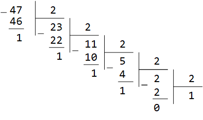
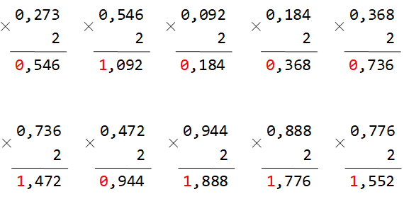
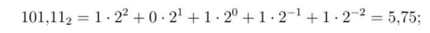
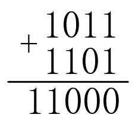

Урок 3. Системы счисления. Двоичная и десятичная
1. Определения
Система счисления (СС) — это совокупность правил для обозначения чисел. СС бывают:
- Позиционные: значение цифры зависит от ее места (позиции). Пример: десятичная система.
- Непозиционные: значение не зависит от позиции. Пример: римская система (I, V, X и т.д.).
- Основание системы счисления: количество знаков или символов, используемых для изображения числа в данной системе счисления.
Наименование системы счисления соответствует ее основанию (например, десятичной называется система счисления так потому, что ее основание равно 10, т.е. используется десять цифр: 0,1,…,9).
1.1. Развёрнутая форма записи числа
Любое число в позиционной системе можно представить в развёрнутой форме – в виде суммы произведений цифр на основание системы в степени, соответствующей позиции (разряду). Позиции нумеруются справа налево, начиная с нуля для целой части. Для дробной части используются отрицательные степени.
Ap = an-1·pn-1 + … + a1·p1 + a0·p0 + a-1·p-1 + a-2·p-2 + …
где p – основание СС, ai – цифры числа.
Пример (десятичное число): 325,4710 = 3·102 + 2·101 + 5·100 + 4·10-1 + 7·10-2.
Пример (двоичное число): 101,112 = 1·22 + 0·21 + 1·20 + 1·2-1 + 1·2-2 = 4 + 0 + 1 + 0,5 + 0,25 = 5,7510.
2. Двоичная система (Binary)
Двоичная система: Для записи чисел используются только две цифры – 0 и 1. Выбор двоичной системы объясняется тем, что электронные элементы, из которых строятся ЭВМ, могут находиться только в двух хорошо различимых состояниях. По существу, эти элементы представляют собой выключатели. Как известно, выключатель либо включён, либо выключен. Третьего не дано. Одно из состояний обозначается цифрой 1, другое – 0. Благодаря таким особенностям двоичная система стала стандартом при построении ЭВМ.
2.1. Таблица степеней двойки
При переводе чисел часто приходится иметь дело со степенями двойки. Вот небольшая таблица для быстрого ориентирования:
| Степень | Значение |
|---|---|
| 20 | 1 |
| 21 | 2 |
| 22 | 4 |
| 23 | 8 |
| 24 | 16 |
| 25 | 32 |
| 26 | 64 |
| 27 | 128 |
| 28 | 256 |
| 29 | 512 |
| 210 | 1024 |
3. Перевод чисел
3.1. Перевод целых чисел из десятичной системы в двоичную
Для перевода целого десятичного числа в двоичную систему необходимо последовательно делить число на 2, записывая остатки (0 или 1), пока частное не станет равным 0. Двоичное число формируется путём записи полученных остатков в обратном порядке: от последнего к первому.

Дополнительные примеры:
Переведём 4710 в двоичную систему:
47 ÷ 2 = 23 (остаток 1)
23 ÷ 2 = 11 (остаток 1)
11 ÷ 2 = 5 (остаток 1)
5 ÷ 2 = 2 (остаток 1)
2 ÷ 2 = 1 (остаток 0)
1 ÷ 2 = 0 (остаток 1)
Записываем остатки снизу вверх: 1011112. Проверка: 32+0+8+4+2+1=47.
Переведём 10010 в двоичную:
100 ÷ 2 = 50 (0)
50 ÷ 2 = 25 (0)
25 ÷ 2 = 12 (1)
12 ÷ 2 = 6 (0)
6 ÷ 2 = 3 (0)
3 ÷ 2 = 1 (1)
1 ÷ 2 = 0 (1)
Результат: 11001002.
3.2. Перевод дробных чисел из десятичной системы в двоичную
Для перевода правильной десятичной дроби в двоичную необходимо последовательно умножать дробную часть на 2, каждый раз выделяя целую часть (0 или 1) как очередную цифру двоичной дроби. Процесс продолжается до получения нулевой дробной части или до достижения нужной точности.

Переведём 0,37510 в двоичную систему:
0,375 × 2 = 0,75 → целая часть 0
0,75 × 2 = 1,5 → целая часть 1
0,5 × 2 = 1,0 → целая часть 1
Дробная часть стала 0, останавливаемся. Записываем целые части сверху вниз: 0,0112.
Если дробная часть не обращается в ноль, перевод выполняют до требуемой точности (например, 5 знаков после запятой).
3.3. Перевод чисел из двоичной системы в десятичную
Для перевода числа из двоичной системы в десятичную используют развёрнутую форму записи (см. п. 1.1).

Дополнительные примеры:
Переведём 11012 в десятичную:
1·23 + 1·22 + 0·21 + 1·20 = 8 + 4 + 0 + 1 = 1310.
Переведём 0,1012 в десятичную:
1·2-1 + 0·2-2 + 1·2-3 = 0,5 + 0 + 0,125 = 0,62510.
4. Двоичная арифметика
С числами в двоичной системе можно выполнять те же арифметические операции, что и в десятичной. Рассмотрим сложение и вычитание.
4.1. Сложение двоичных чисел
Правила сложения одноразрядных двоичных чисел:
- 0 + 0 = 0
- 0 + 1 = 1
- 1 + 0 = 1
- 1 + 1 = 10 (0 и перенос 1 в следующий разряд)
Пример: Сложить 10112 и 11012.
Записываем столбиком:

Пояснение: 1+1=10 (пишем 0, перенос 1); далее 1+0+1(перенос)=10 (0, перенос 1); 0+1+1(перенос)=10 (0, перенос 1); 1+1+1(перенос)=11 (пишем 1, перенос 1). Получаем 110002 = 2410.
4.2. Вычитание двоичных чисел
При вычитании иногда приходится занимать единицу из старшего разряда. Правила:
- 0 - 0 = 0
- 1 - 0 = 1
- 1 - 1 = 0
- 0 - 1 = 1 (с заёмом 1 из старшего разряда)
Пример: Вычесть 1012 из 11002.
1100
- 101
-------
111
Пояснение: из нуля вычитаем 1 – занимаем, получаем 10-1=1 (в текущем разряде), следующий разряд уменьшается на 1 и т.д.